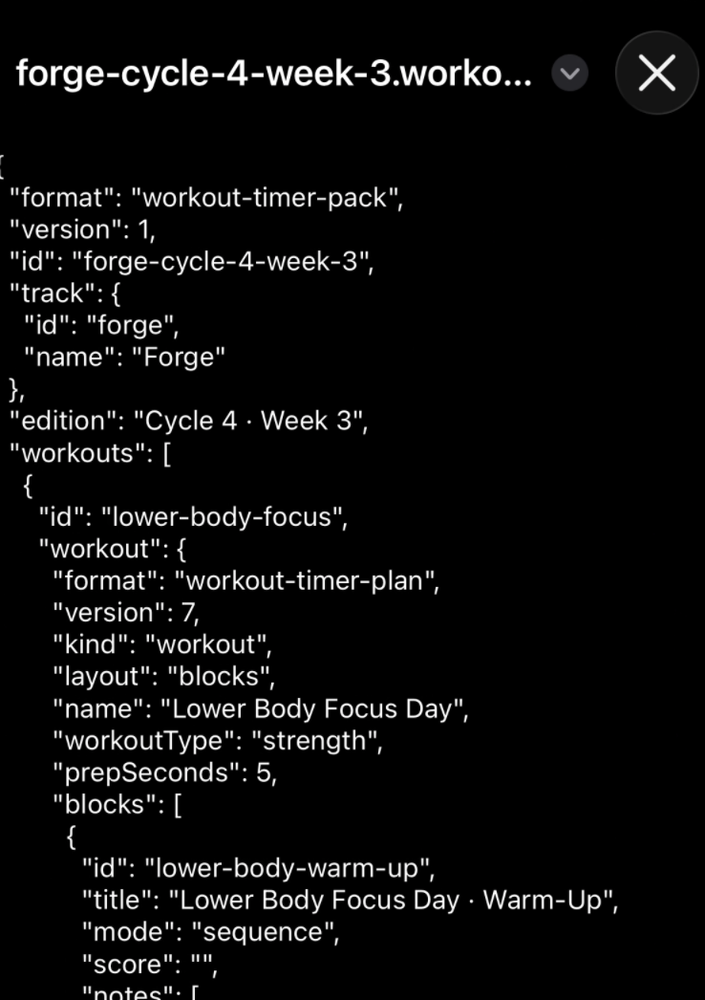
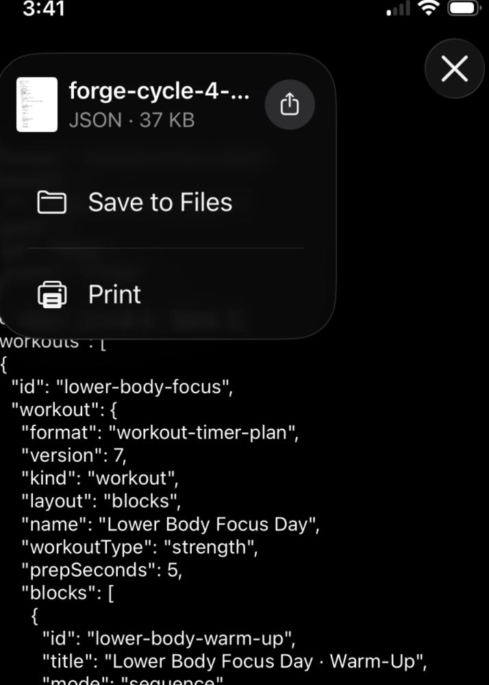

{kind=link}
{kind=link}
Manual sets
Tracked manual sets let you enter completed reps and weight before Set done. Warm-ups and grouped rounds use simpler completion controls. Rest screens are for recovery.
A local-first companion for choosing, running, and logging your BuiltSimple workouts on an iPhone or iPad.
Start with Momentum or Rise, or use Manage packs → Import workout pack to add the weekly file supplied to you. A successful import opens its track and edition.
Choose an edition in Workout pack, then select a workout day. Check the track and week above the workout title. Cardio · Burpees appears under Optional.
Check that the exercises, sets, targets, rests, and block order match your current assignment, then choose Start workout. BuiltSimple workouts begin with a five-second countdown.
Follow the completion button for the current activity. Tracked manual sets offer reps and weight entry before Set done; grouped work uses round completion. After finishing, choose Log result and save the session to History.
Copy the concise workout overview for an activity description. Export History separately when you want a complete backup.
This is an early community test of Workout Timer as a BuiltSimple companion. The app includes a Starter Pack for each of Momentum and Rise, with four training days and shared optional cardio. Separately imported editions use labels such as Cycle 4 · Week 3. Forge is available as an importable workout pack. Foundation and Built workouts are not yet included.
The supplied workouts were added manually for this test. Workout Timer does not connect to BuiltSimple or update its programming automatically, so always treat your current BuiltSimple assignment as authoritative.
A workout pack contains several workout days in one file. When FITR opens the supplied .workout-pack.json file as text, save it to Files before opening Workout Timer.

Tap the workout-pack attachment in FITR. Seeing JSON text is expected. Tap the arrow beside the filename at the top.

Choose Save to Files, select a location you can find again, and tap Save.
Return to the Workout tab in Workout Timer and tap Manage packs.
Tap Import workout pack. The iPhone Files picker opens.
Choose the workout-pack JSON file from Recents, or use Browse to find the folder where you saved it.
Tap either FITR screenshot to view it at full size. After a successful import, Workout Timer opens the pack’s track and lists its workout days.
Use the Workout pack dropdown above the workout days to choose an edition. Momentum and Rise initially offer Starter Pack; imported weekly editions appear alongside it. Importing next week's pack keeps earlier editions available, and importing the same file again keeps your edits. Switching to a different pack asks you to choose a day without opening Manage packs. New editions use their own targets; your edits are not copied into the next week. Opening and closing Manage packs or choosing the same pack keeps your current day.
Use Edit workout to enter the rep targets from your assignment wherever the template says PR-based reps. These are instructions, not automatically calculated targets. Edits save automatically to that day and pack, including Starter Packs, and stay available when you switch days or reopen offline. They do not create another workout. You cannot save a pack day as a new custom workout or export an edited pack.
Check your current track, week, and workout day in BuiltSimple.
If Workout Timer is showing another track, choose Change and select the one you are currently following.
Choose the matching edition in Workout pack, then select the Focus Day and compare its exercises, targets, and rests with the current assignment before training.
Choose Edit workout to adjust blocks, exercises, sets, targets, rests, timers, or added weight when your assigned version differs. Leave added weight blank for bodyweight sets.
Choose Done editing beside Restore original in the editing panel. Changes save automatically to this workout and week on this device; Done editing saves once more before closing the editor. To undo them later, choose Edit workout → Restore original and confirm. Other days and History stay unchanged.
Workout options → Workout colours lets you adjust the colours. BuiltSimple workouts use a fixed five-second start delay.
Workout, Circuit, and Intervals are the main navigation choices. More contains Rest, Stopwatch, and Custom workouts.
More → Custom workouts has three choices: New basic workout, New structured workout, and Load workout file. Basic workouts use exercises and rests; structured workouts organize them into blocks. Custom workouts keep adjustable start delay and colours.
Use Save workout file before leaving a custom editor to keep a copy you can load later. Returning to Custom workouts opens the three choices, and reopening the app does not automatically resume a custom editor. Use Load workout file to open your saved copy. The Workout tab returns to BuiltSimple.
Use Manage packs in Workout for weekly pack files. Circuit has separate file controls; Rest, Stopwatch, and Intervals provide standalone timer tools.
Tracked manual sets let you enter completed reps and weight before Set done. Warm-ups and grouped rounds use simpler completion controls. Rest screens are for recovery.
Review the next block, then tap Start block. A skipped block is left out of the saved session.
Let the timer finish or end it early. Record completed full rounds before finishing the workout.
Each minute starts the next activity. Complete its target, then recover until the following minute begins.
Workout Timer is local-first. It has no account, server, subscription, or analytics. Your selected track, plans, settings, and workout history stay in the browser on this device and are not uploaded by the app.
Once the app and starter files have finished caching, the installed app works without gym Wi-Fi or cellular service. Test an offline launch before relying on it at the gym. A connection is needed to load the site initially, check for app updates, and download new packs. Once a pack is imported, its workouts are available offline.
Importing copies the workouts into this app’s storage on your device. They are not linked to the downloaded JSON file, and you do not need to select that file again to train. Keep the original pack as a backup. Pack edits remain in app storage; exporting edited packs is not available yet. App updates preserve this storage, but deleting the app or clearing website data can remove it.
The file controls in Custom workouts handle your own reusable plan. The file does not include completed-session history.
Export history and Import history handle completed sessions. They do not back up the installed packs, current pack edits, or custom workout files.
A concise plain-text summary for sharing elsewhere. It is convenient, but it is not a complete history backup.
Open Workout Timer while connected to the internet so it can download an update. When Update ready appears, finish and log any workout before closing the app.
Open the app switcher: swipe up from the bottom and pause, or double-click the Home button on devices with one. Find Workout Timer and swipe its preview up to close it. Reopen it from its Home Screen icon. Simply returning to the Home Screen may leave the old version running.
Close every Workout Timer tab or window, including any open Guide pages, then open the site again. A refresh alone may leave the new version waiting for the old pages to close.
Check the version at the bottom against the release announced to the community. If it is still older, close any other open Workout Timer pages, reopen while online, and repeat the close-and-reopen step once the update is ready. Closing before the download finishes may simply reopen the older version.
When you are ready to try Workout Timer at the gym, add it to your Home Screen for quick access and offline use.
Use the button below to open the timer in your browser.
Tap the square with an upward arrow in the browser toolbar or menu.
Choose Add to Home Screen, then tap Add. If Open as Web App is shown, leave it enabled. Launch the new Home Screen icon while online to let the app finish caching, then test opening it offline.
The installation help in Workout Timer also includes these steps and a reminder about local data and backups.
Open Workout Timer